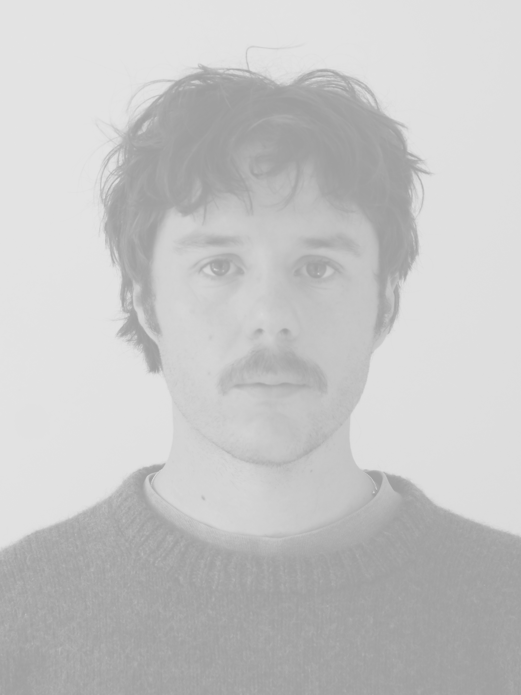

Christopher T. (b1994 Aotearoa)
? →

Christopher is an image and sound maker interested in labour rights, more-than-human perspectives, radical environmental action, and peace.
He is a co-founder of
Film Adjacent
, a Pōneke based screening collective for experimental cinema.
Email:
c_g@tuta.io